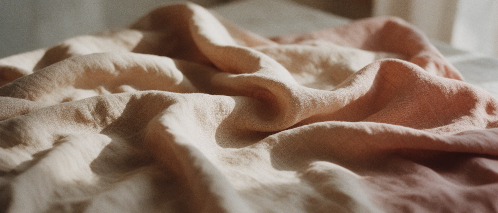
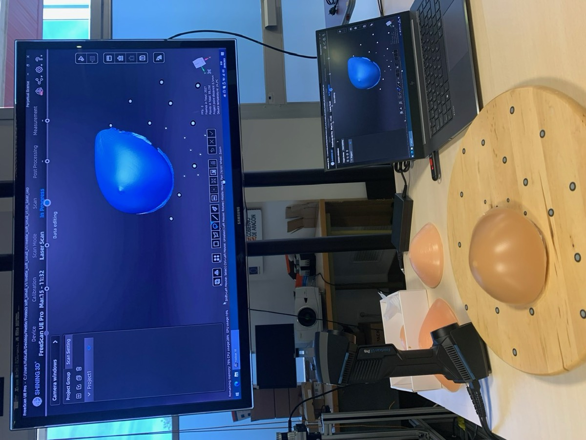
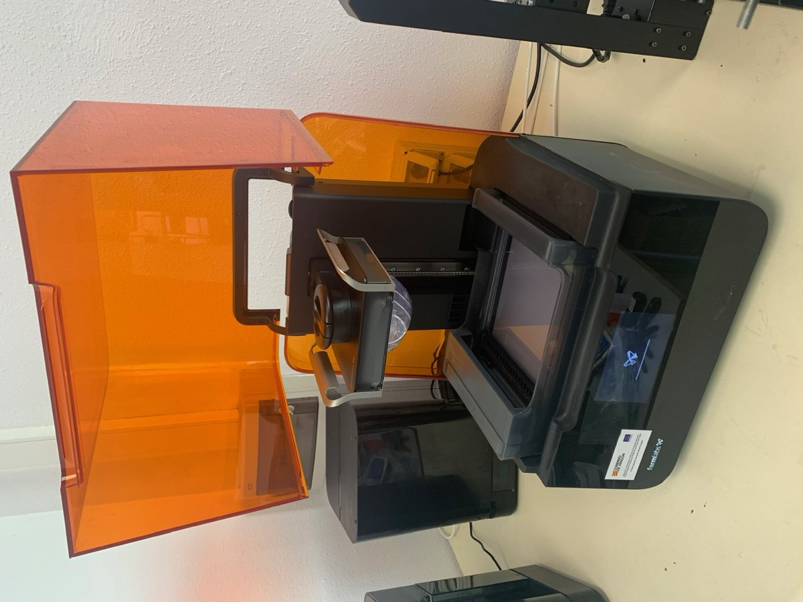
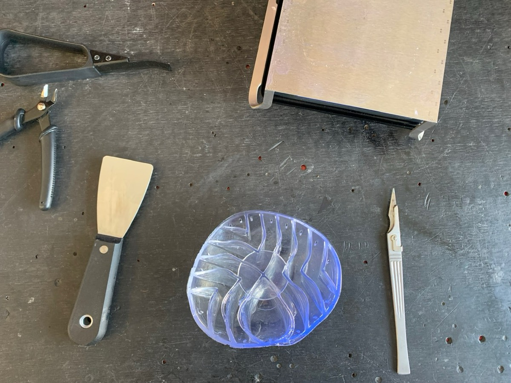
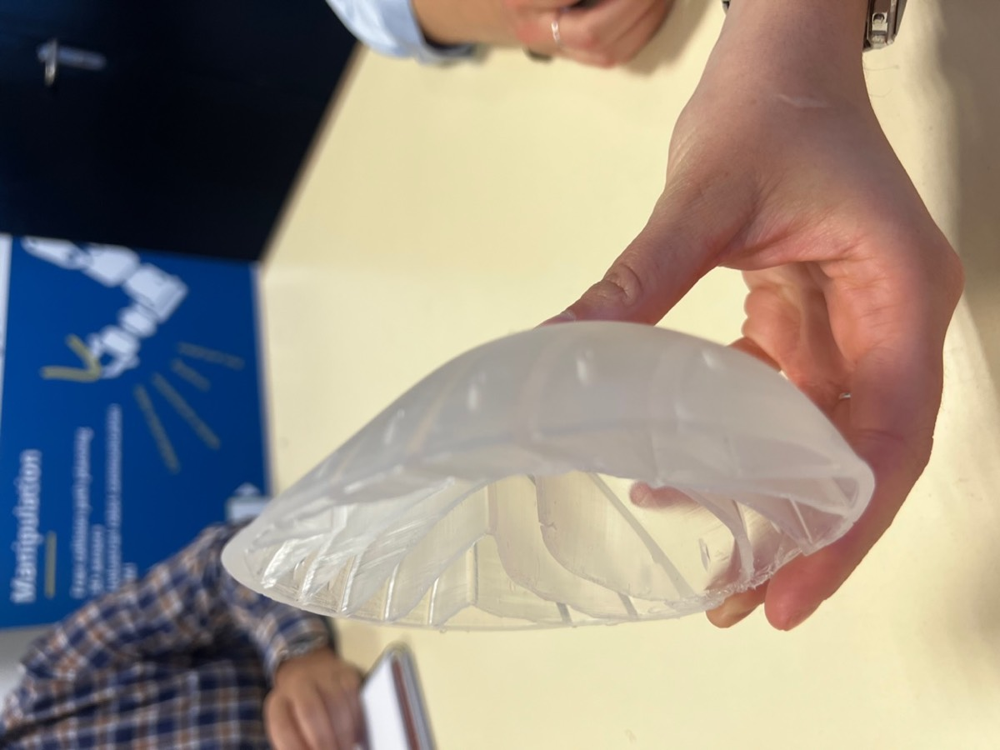
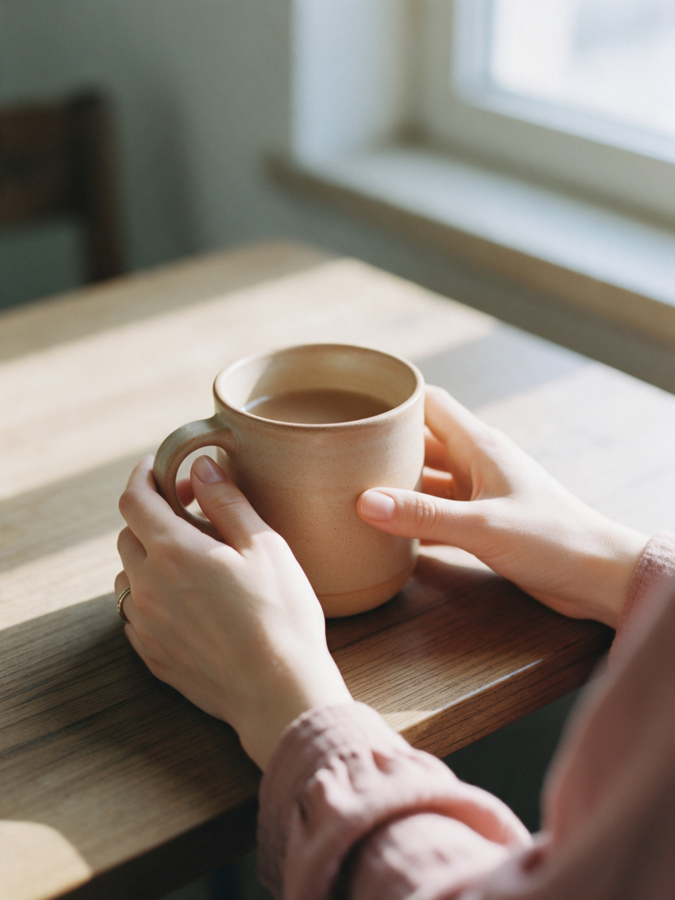

Propuesta de rediseño · home de mycoco.es · no publicada
No defendemos una decisión. Defendemos que puedas decidir.·Prótesis externas de pezón donadas·Acompañamiento entre mujeres que han pasado por lo mismo·Dona la huella de tu pezón·No defendemos una decisión. Defendemos que puedas decidir.·Prótesis externas de pezón donadas·Acompañamiento entre mujeres que han pasado por lo mismo·Dona la huella de tu pezón·
De la referencia tomo tres cosas: la marquesina, la escala del titular y una navegación mínima. No tomo el registro. Teta & Teta grita a la sociedad y le sale bien. My Coco le habla a una mujer a la que diagnosticaron el martes. Mismo feminismo, trabajo distinto: si esta web grita, falla justo a quien tiene que servir.

37.682
nuevos casos de cáncer de mama femenino estimados en España.
REDECAN, 2025
Autonomía corporal después del cáncer de mama
Tu cuerpo.Tus tiempos.Tu decisión.
Después de una mastectomía hay más de un camino, y ninguno es el correcto por defecto. Te ayudamos a entender tus opciones, a decidir a tu ritmo y a acceder a una prótesis externa de pezón donada.
Sin registro. Sin coste. Puedes volver cuando quieras.
El titular ocupa la pantalla, en Cormorant sobre una foto cálida y no una condensada negra sobre blanco. La escala da confianza; la paleta evita que suene a campaña de denuncia. «Tu decisión» va en cursiva y en teja: la única palabra que cambia de color. La foto hace parallax conducido por scroll y el degradado lateral garantiza el contraste del texto en cualquier punto.
Empieza por aquí
¿Dónde estás ahora mismo?
Elige una y la web se ordena para ti. No preguntamos nada más.
Esta es la pieza más importante de la portada y la más barata de construir. Es el selector de momento del funnel: una sola pregunta que decide a qué página entra y qué secuencia de correos recibe. Sin fecha de diagnóstico, sin tipo de tumor, sin estadio — nada que sea dato de salud identificable. Flota sobre el hero porque es la acción principal de la página, no un bloque más. En WordPress es un bloque con seis enlaces; no necesita plugin.
Gratuito siempreNi cuotas ni registro para leer nada.
Revisado por profesionalesCada página con autora, revisora y fecha.
Sin recomendar opcionesInformación y preguntas, no consejos.
Datos mínimosLos de salud, con tratamiento aparte.
Las opciones
No existe una única forma correcta de vivir tu cuerpo
Cada una de estas opciones es legítima. La que elijas depende de tu situación clínica, de tus tiempos y de lo que a ti te importe.
Reconstruirte
Con implante o con tejido propio, en el mismo momento de la cirugía o más adelante.
No reconstruirte
Vivir con el resultado de la mastectomía, con o sin cierre plano acordado con cirugía.
Prótesis externa
Mamaria, de pezón o ambas, sin cirugía añadida y de forma reversible.
No usar nada
Ni reconstrucción ni prótesis. Es una opción, no una renuncia.
Decidir después
Cuando clínicamente sea posible, y cuando tú quieras. Aplazar también es decidir.
My Coco no recomienda ninguna. Te damos la información y las preguntas para que la decisión la tomes tú con tu equipo médico.
Las cinco columnas miden exactamente lo mismo. Mismo ancho, mismo alto, misma longitud de texto, sin iconos, sin una destacada, sin numerar y sin orden que sugiera preferencia. Es la regla de neutralidad convertida en rejilla. Por eso en pantallas medianas pasan a una sola columna y no a dos: dos columnas con cinco tarjetas dejan una huérfana, y la huérfana destaca. Esto hay que defenderlo con quien maquete.
Observatorio
En España se mide el tumor. No se mide la decisión.
Reunimos lo que sí está publicado y señalamos lo que falta. Cada cifra va con su fuente y su periodo. Cuando no hay dato, lo decimos.
37.682
nuevos casos de cáncer de mama femenino estimados en España.
REDECAN — Estimación de la incidencia de cáncer en España, 2025.
29%
de reconstrucción observada: 22% inmediata y 7% diferida. Sube al 58% en menores de 46 años.
Estudio del Sistema Sanitario Público de Andalucía sobre mastectomías por cáncer de mama 2010-2013 (n = 4.412 con seguimiento superior a 2 años).
763
días de demora media cuando la reconstrucción es diferida. Más de dos años.
Misma fuente: estudio del SSPA de Andalucía, mastectomías 2010-2013.
82,3%
de los profesionales encuestados no ha recibido formación en toma de decisiones compartida.
Encuesta a oncólogos y cirujanos, Andalucía.
Sin dato
Cuántas mujeres eligen no reconstruirse o quieren un cierre plano estético en España.
No existe serie pública nacional. Es el primer vacío que el observatorio quiere medir.
Los nuevos casos, por edad
La mastectomía no es una cuestión de mujeres mayores. Casi una de cada nueve tiene menos de 45 años, y ahí la decisión corporal pesa distinto.
0 a 444.099
45 a 6418.381
65 o más15.203
REDECAN, estimación 2025. Barras proporcionales al grupo mayor.
Lo que nadie ha medido todavía
Uso real de prótesis externas: frecuencia, coste y satisfacción.
Porcentaje que aplaza la decisión, y demora decisional por comunidad autónoma.
Arrepentimiento y satisfacción con la decisión tomada.
Desglose entre mastectomía terapéutica y preventiva, unilateral y bilateral.
Listas de espera para reconstrucción: no hay serie pública homogénea.
Esta sección no estaba en la maqueta y es la que más cambia el negocio. Es el activo de posicionamiento: ser la fuente que ChatGPT, Perplexity y los resúmenes de Google citan cuando alguien pregunta por la reconstrucción en España. Por eso las cifras van en texto, no en imagen, cada una con su fuente al lado, y el bloque irá con datos estructurados Dataset de Schema.org. «Sin dato» es deliberado: declarar el vacío es lo que convierte una web en observatorio. Las cifras salen de .agent/knowledge/observatorio-datos.md, no de la web actual: las de mycoco.es (16.000 mastectomías/año de SECPRE, 20.000 de ECIR 2019) están sin fechar o desactualizadas.
La primera encuesta
¿Qué podemos mejorar?
Queremos escuchar tu experiencia. Esta encuesta está dirigida a pacientes de cáncer de mama, para conocer mejor la realidad actual de un proceso de mastectomía o reconstrucción y detectar necesidades que todavía no están siendo atendidas.
Las respuestas son anónimas y se utilizan únicamente con fines de investigación y desarrollo. Puedes dejarla a medias y no pasa nada.
Tu edad y tu localidad, para poder mirar el territorio.
Si usas prótesis mamaria externa y cómo te va con ella.
Cómo fue la decisión: qué te explicaron y qué no.
Qué echaste de menos en el proceso.
Sin nombre, sin correo obligatorio, sin historia clínica.
Esta encuesta ya existe y es de Sara («¿Qué podemos mejorar?», 18 páginas). Es la que convierte el observatorio en algo vivo: hasta ahora la sección de datos sólo recopilaba fuentes ajenas, y con esto empieza a generar dato propio. Va enlazada, no incrustada a propósito: un iframe de Google Forms mete cookies de terceros en la portada y obliga a pasar por el banner de consentimiento antes de que nadie pueda leer nada. Dos cosas que revisar antes de enlazarla en abierto: pide talla de sujetador y uso de prótesis, que son datos de salud aunque la encuesta sea anónima — conviene que la política de privacidad lo recoja; y el aviso de anonimato debe estar dentro del propio formulario, no sólo en esta página.
El programa
Prótesis externas, donadas
Mamaria, de pezón o ambas. Se colocan sobre la piel y se pueden quitar. No es cirugía y no es permanente. Para algunas mujeres resuelven algo concreto; para otras no hacen falta. Las dos respuestas están bien.
El modelo real de la prótesis mamaria, con su estructura interna y su textura. En iPhone o iPad se abre en tu propia habitación y puedes verlo a escala; en ordenador se descarga el archivo.
La vista en realidad aumentada funciona en Safari sobre iOS y iPadOS.
El modelo 3D es el de Recursos/mettle nervios rebajados.usdz, tal cual. USDZ es el formato de Apple: se abre en realidad aumentada en iPhone y iPad, y en el resto de dispositivos se ofrece la descarga. Para que lo vea todo el mundo dentro de la web hace falta además una versión GLB y el componente model-viewer; la conversión necesita Blender o las herramientas USD de Pixar, que no están en esta máquina. Es un paso pequeño cuando lo decidáis.
Banco de huellas
Dona la huella de tu pezón
Las prótesis externas que existen se moldean sobre una forma estándar. Ninguna mujer tiene una forma estándar. Si donas tu huella, esa forma entra en un banco anónimo del que salen prótesis para otras mujeres.
01Pides el kit
Te llega a casa un kit de molde, gratuito y con el envío de vuelta pagado. Nada de consulta ni de cita.
02Haces la huella
Cinco minutos en tu baño, con las instrucciones dentro. Si no sale a la primera, el kit trae material de sobra.
03Entra en el banco
La digitalizamos, se separa de tus datos y pasa a ser una forma más del banco del que salen las prótesis donadas.
Qué pasa con tu huella. Se separa de tu nombre en cuanto llega y se guarda sin ningún dato que permita identificarte. No se publica, no se vende y no se cede. Puedes pedir que se retire en cualquier momento, y se retira. No hace falta que te hayan operado para donar.
Esta sección necesita una decisión legal antes de existir. Un molde del cuerpo de una persona identificada es, como mínimo, un dato personal, y según cómo se recoja y con qué se cruce puede caer en categoría especial o en biometría. El texto ya promete lo correcto —separación del nombre, no publicación, retirada a petición—, pero esas promesas hay que poder cumplirlas: hace falta consentimiento específico por escrito, un procedimiento de anonimización real y saber quién custodia los moldes físicos. Escrito así a propósito, para que la conversación con asesoría sea concreta. También falta el dato de cuántas huellas hay: no lo invento, se pone cuando exista.
El método
Escuchar primero, diseñar después
Cada prótesis sale de un cuerpo real escaneado, no de una talla estándar. Este es el taller donde se hace, y es la prueba del método del que sale todo lo demás.

Se escanea la formaLa geometría real entra al ordenador punto por punto, con su volumen y su caída.

Se imprime en resinaCada iteración se imprime y se prueba. Lo que no se prueba sobre un cuerpo, no vale.

Se abre por dentroLa estructura interna es lo que reparte el peso y deja pasar el aire. Es donde está el trabajo.

Se vuelve a escucharY se cambia. La versión que llega a una casa ha pasado por muchas manos antes.
Aviso de coherencia, y no es menor. Todo el material real que hay en Recursos nuevos —el render, el vídeo, los prototipos, el modelo USDZ— es de la prótesis mamaria. La maqueta y el banco de huellas hablan de prótesis de pezón. Son dos productos distintos. He ajustado el texto a «prótesis externas: mamaria, de pezón o ambas» para que la página no afirme algo que las fotos desmienten, pero hay que decidir cuál es el programa de donación: si es el de pezón, faltan fotos de ese producto; si es el mamario, hay que reescribir el banco de huellas. Tal como está ahora, una lectora atenta ve la contradicción.
Los programas
Nueve formas de que no decidas sola
Comunidad
Red de madrinas
Mujeres mastectomizadas que acompañan a otras desde la experiencia vivida, emparejadas por trayectoria corporal y no por edad.
Divulgación
Charlas y talleres
Mastectomía, reconstrucción y no reconstrucción, prótesis, sexualidad, autoestima, duelo corporal y toma de decisiones.
Red
Profesionales
Psicología, sexología, fisioterapia, oncología, cirugía, enfermería y terapia ocupacional. Derivamos cuando corresponde.
Comunidad
Club de lectura
Cáncer, cuerpo, feminismo, autonomía, cicatriz, duelo y reparación. Leer juntas también es acompañarse.
Materiales
Guías de decisión
Materiales en lenguaje claro para la toma de decisiones compartida, conectados con hospitales y sociedades científicas.
Datos
Observatorio
Medir los vacíos de información en España: no reconstrucción, cierre plano, prótesis externa, demora decisional y satisfacción.
Impacto
Prótesis donadas
Prótesis externas de pezón financiadas por empresas y entregadas sin coste para quien las pide.
Alianzas
Empresas comprometidas
Salud femenina, innovación social y RSC, con el dato de impacto por delante de la foto de octubre.
Incidencia
Decisión compartida real
Llevar la conversación a hospitales, asociaciones e instituciones para que la decisión compartida se practique, no se enuncie.
Arrastra, usa las flechas del teclado o los botones. Las nueve líneas salen del documento de estrategia del movimiento.
Los nueve programas son los de la estrategia (estrategia-y-posicionamiento.md), no invento ninguno. Van en carrusel con anclaje porque nueve tarjetas en rejilla ocupan media página y aquí no son la decisión principal: la decisión principal es el selector de arriba.
Lo que casi nadie cuenta
La sexualidad también forma parte de esto
Más de la mitad de las supervivientes de cáncer de mama refiere problemas sexuales, y la mitad, preocupación por su apariencia. Casi ninguna lo habló antes con un profesional.
Informe de supervivientes de cáncer de mama de la AECC (n = 1.293): problemas sexuales 52,9%; preocupación por la apariencia 50,8%.

Deseo e intimidad
Qué cambia, qué tiene tratamiento y cómo empezar la conversación. Sin dar por hecho que tienes pareja.
Estas tres fotos siguen siendo de IA y son provisionales — el material real que llegó cubre producto, taller y a Sara, pero no estas escenas. Sirven para ver el diseño en pie, no para publicar. Deliberadamente no hay ningún torso con cicatriz ni ningún retrato de paciente generado: una web cuya premisa es la representación real de cuerpos reales no puede ilustrarse con cuerpos inventados. Esas dos fotos —el torso y el retrato de Sara— tienen que ser reales, con consentimiento escrito, luz natural y revelado cálido. Lo demás (atmósfera, manos, objetos) puede sustituirse con calma.
Detrás de cada diagnóstico hay una persona, una familia y cientos de decisiones que nadie debería afrontar en soledad.
Sara Gascón, fundadora
La comunidad
Nadie explica esto mejor que quien ya ha pasado por ello
La red de madrinas empareja a mujeres por trayectoria corporal parecida, no por edad ni por diagnóstico. No sustituye a tu equipo médico: cubre lo que la consulta no llega a cubrir.
¿My Coco me va a decir qué debo hacer con mi cuerpo?
No. No recomendamos ninguna opción corporal ni desaconsejamos ningún tratamiento. Te damos la información y las preguntas para que decidas tú con tu equipo médico. Si buscas una recomendación clínica personalizada, esa conversación es con tu cirujana o tu oncóloga.
¿Qué es un cierre plano estético?
Es una mastectomía en la que se acuerda con cirugía un resultado plano y liso, sin exceso de piel, como objetivo buscado y no como consecuencia. En España no existe una serie pública que mida cuántas mujeres lo piden ni cuántas lo obtienen: es uno de los vacíos que el observatorio quiere medir.No hay fuente nacional consolidada. Referencias internacionales: Not Putting on a Shirt, Flat Friends UK.
¿Puedo esperar y decidir más adelante?
Cuando sea clínicamente posible, sí: aplazar también es decidir. Conviene saber que la reconstrucción diferida tiene sus propios tiempos — en el mejor estudio español disponible la demora media fue de 763 días — y que la radioterapia condiciona la técnica y el momento. Es una conversación que toca tener con tu equipo.Estudio del SSPA de Andalucía, mastectomías 2010-2013. Consenso SESPM sobre reconstrucción y radioterapia.
¿La prótesis de pezón cuesta algo?
No. La financian empresas a través del programa de donación y llega sin coste para quien la pide. No es cirugía, se coloca sobre la piel y se puede quitar cuando quieras.
¿Para qué sirve donar la huella de mi pezón?
Las prótesis externas se moldean sobre formas estándar, y ninguna mujer tiene una forma estándar. Cada huella donada amplía el banco de formas del que salen las prótesis que entregamos. Tu huella se separa de tu nombre en cuanto llega, se guarda sin ningún dato identificativo, no se publica y no se cede. Puedes pedir que se retire cuando quieras. No hace falta que te hayan operado para donar.
¿Qué hacéis con mis datos?
Pedimos los datos mínimos y nunca preguntamos diagnóstico, estadio ni fecha de cirugía para navegar por la web. Los datos de salud son categoría especial y tienen un tratamiento aparte, con base legal e información específica. Puedes ejercer tus derechos escribiendo a la dirección del pie.
¿Sois una asociación? ¿De dónde sale el dinero?
My Coco es un movimiento impulsado por Sara Gascón, fundadora también del podcast Positiv@s pero Realistas. El programa de prótesis se financia con aportaciones de empresas; los contenidos y la comunidad, con convocatorias de impacto social y alianzas. La forma jurídica y el CIF se publicarán aquí en cuanto estén validados.
Acompaño a alguien. ¿Qué digo y qué no digo?
Tenemos una guía específica para familiares y parejas, porque influyen en la decisión más de lo que suelen creer. La regla corta: preguntar antes de opinar, no adelantarse a nombrar «lo mejor» y cuidar también de ti.
Sobre My Coco
Esto empezó acompañando a mi madre
Empezamos diseñando una prótesis. Escuchando a las mujeres entendimos que había mucho más que diseñar.
Sara GascónFundadora de My Coco y de Positiv@s pero Realistas
Del material real sólo está publicado producto y taller. En Recursos/Recursos nuevos hay además el retrato de Sara, su foto del podcast y una grabación de dos mujeres conversando — y están fuera a propósito. Cada persona identificable necesita firmar su cesión de imagen, y las mujeres del reportaje que llevan pañuelo son pacientes identificables: eso convierte su imagen en un dato que revela información de salud. Es el mismo estándar que aplicamos al consentimiento de la familia para la página de la historia. En cuanto estén las cesiones, entran: los archivos ya están recortados y optimizados.
La historia va en página propia, no aquí. En la portada sólo entra la cita y la firma. Si el relato personal y la información sanitaria comparten página, la web pierde el E-E-A-T entero. Y antes de publicar esa página hace falta el consentimiento por escrito de la familia sobre qué se cuenta y qué no: es la única página que expone a una persona real que no es Sara. El avatar sigue siendo un círculo de color a propósito — el retrato tiene que ser una foto real de ella.
Nos han contado
Aragón TVAntena 3La RazónHeraldoConSaludGoAragónITA InnovaWomen TechFlor de Vida
Cada pieza con su enlace y su fecha. Las apariciones se listan, no se presumen: quien llega aquí está comprobando si puede fiarse.
Estos nueve son los que constan hoy en mycoco.es, así que los doy por publicados. Lo que falta es el enlace y la fecha de cada pieza — sin eso no van con logo, van en una lista de texto. Un logo de más en una web de salud es un problema, no un adorno.
Cómo trabajamos
Las reglas con las que se escribe esta web
Revisión profesional
Los contenidos nacen de lo que cuentan las mujeres y los revisa un profesional. Cada página lleva autora, revisora y fecha.
Neutralidad
No recomendamos ninguna opción corporal. Damos información y preguntas.
Privacidad
Pedimos los datos mínimos. Los de salud tienen un tratamiento aparte.
Límites claros
No damos consejo médico individual ni atendemos urgencias. Cuando corresponde, derivamos.
Empresas
Las empresas financian cada prótesis
Recibes el dato de cuántas se han entregado gracias a tu aportación, no una foto para octubre.
Empresas va en contorno, abajo y sobre otro fondo. Nunca compitiendo con el CTA de apoyo. Una mujer y una empresa no pueden sentir que están en la misma conversación.
Positiv@s pero Realistas
Hablamos de esto cada semana
El podcast donde se habla del cáncer de mama sin miedo y sin adornos. Un espacio seguro y libre de juicios. Se escucha en iVoox, Spotify, Apple Podcasts y YouTube.
No hace falta que cuentes nada médico. Con decirnos en qué momento estás, basta.
El formulario valida de verdad pero no envía nada: es una maqueta. Fíjate en dos cosas que sí son decisiones de producto: el desplegable coloca «prensa» y «empresa» al final, detrás de las opciones de quien necesita ayuda; y la casilla de RGPD pide expresamente que no se escriban datos de salud, porque un mensaje libre en un formulario es la vía más fácil de acabar tratando categoría especial sin base legal.